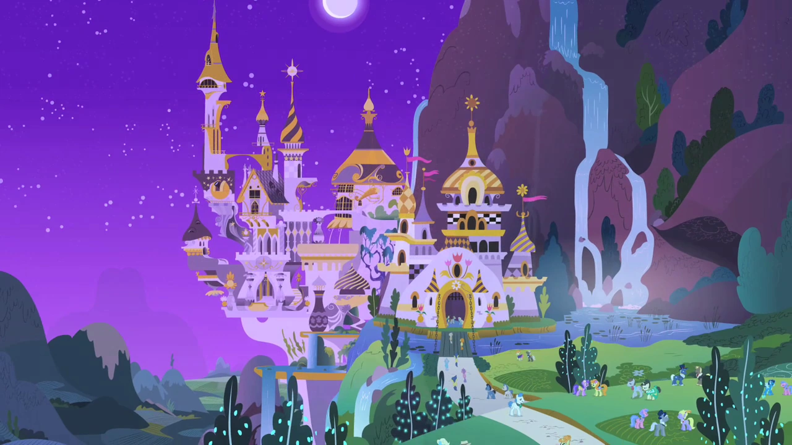

Sebuah kerajaan fiktif dan menjadi latar tempat utama untuk film, video, komik, buku maupun animasi dari serial My Little Pony: Friendship Is Magic.
Overview
Peta Equestria
Equestria (Bahasa Inggris : The Kingdom of Equestria) atau kadangkala disebut sebagai Kerajaan Equestria adalah sebuah kerajaan fiktif dan menjadi latar tempat utama untuk film, video, komik, buku maupun animasi dari serial My Little Pony: Friendship Is Magic. Negeri Equestria terletak di benua Equestrian dan memiliki tanah seperti halnya planet bumi. Negeri ini dihuni oleh kuda poni yang dibayangkan memiliki kecerdasan seperti manusia. Putri Celestia dan Putri Luna adalah pemimpin dari negeri ini dengan Canterlot sebagai ibu kotanya.
Fondasi Equestria digambarkan sebagai hasil kerja sama unicorn, pegasi, dan kuda poni bumi, yang bersatu secara harmonis untuk melawan makhluk mirip kuda yang disebut windigos yang memakan konflik; Hari Hearth's Warming adalah hari libur tahunan yang merayakan pendiriannya. "Bit" adalah mata uang resmi Equestria dan wilayahnya. Alih-alih bahasa Inggris, disebutkan bahwa mereka menyebut bahasa mereka "Ponish"; Namun, karena fakta bahwa bahasa Inggris tertulis terlihat beberapa kali selama seri, secara umum dipahami bahwa ini adalah bahasa Inggris dengan nama yang berbeda.
Production
Lauren Faust menulis dalam komentar di halaman DeviantArt-nya bahwa Hutan Everfree berada di sebelah barat Ponyville, Sweet Apple Acres di barat daya, dan pondok serta padang rumput Fluttershy terletak di utara pertanian, mungkin antara Ponyville dan hutan. Canterlot berada di timur laut Ponyville. Namun, dalam wawancara berikutnya, Faust dan Jayson Thiessen menyebutkan bahwa geografi dan kesinambungan pertunjukan didefinisikan secara longgar dan dapat berubah jika diperlukan, dan seorang seniman tata letak menyatakan pada 10 Desember 2011 bahwa tim produksi tidak memiliki peta resmi. Equestria yang mereka miliki.
Kata bahasa Inggris yang paling mirip dengan nama tempat Equestria adalah equestrian, "dari atau berkaitan dengan menunggang kuda", dari bahasa Latin equester, "milik seorang penunggang kuda", dari equus, "horse", yang juga merupakan asal usul kuda. Dalam pengertian ini, "Equestria" akan diterjemahkan sebagai "negeri para penunggang kuda" dan bukan "negeri kuda".
Locations
Equestria memiliki banyak lokasi geografis, berikut adalah beberapa tempat yang sering muncul dalam acara.
Ponyville
Equestria adalah latar utama pertunjukan ini. Afiliasi pasti sebagian besar lokasi dengan Equestria tidak disebutkan. Peta bergaya Equestria muncul di buku panduan seri ini, dan mencakup sebagian besar lokasi di bawah ini. Versi yang lebih baru disertakan dalam The Art of Equestria. Lokasi lain yang muncul atau disebutkan dalam seri ini juga disertakan.
Canterlot

Canterlot adalah ibu kota Equestria dan rumah bagi istana kerajaan Putri Celestia dan Putri Luna. Kota ini juga merupakan rumah bagi Twilight Sparkle dan Spike sebelum mereka pindah ke Ponyville. Canterlot adalah tempat berlangsungnya acara-acara besar seperti Grand Galloping Gala. Nama tersebut merujuk pada Camelot, rumah bagi Raja Arthur dan "Knights of The Round Table" miliknya serta merupakan plesetan dari kata "canter," gaya berjalan tiga ketukan yang dimiliki oleh semua kuda yang lebih cepat daripada trot tetapi lebih lambat daripada gallop.
Hutan Everfree
Hutan Everfree terletak di luar Ponyville. Para poni mengatakan hutan itu tidak alami dan tidak berfungsi seperti bagian Equestria lainnya, karena tanaman tumbuh sendiri, hewan merawat diri sendiri, dan cuaca berubah tanpa bantuan poni. Gubuk Zecora terletak di hutan dan juga merupakan rumah bagi beberapa makhluk aneh, termasuk ursa, timberwolves, dan parasprite. Pohon Harmoni ditemukan jauh di dalam hutan, di ngarai yang terletak di dekat Kastil Dua Saudari. Fluttershy membayangkan pengusirannya dari Equestria dalam episode A Bird in the Hoof di tempat yang secara visual cocok dengan Hutan Everfree. Spike, merasa ditinggalkan, pergi ke suatu tempat yang secara visual cocok dengan Hutan Everfree, dan tidak terlalu jauh dari Ponyville, di Owl's Well That Ends Well.
Crystal Empire
Crystal Empire diperkenalkan dalam episode perdana season ketiga. Celestia membahas Crystal Empire sebagai bagian dari Equestria dalam episode tersebut. Dalam The Ballad of the Crystal Empire, Twilight Sparkle menyebutkan Kerajaan Kristal sebagai bagian dari sejarah Crystal Ponies. Itu juga merupakan rumah bagi Crystal Ponies serta Shining Armor dan Putri Cadance, yang mengambil alih kerajaan setelah Raja Sombra dikalahkan untuk kedua kalinya oleh Crystal Heart. Buku Twilight Sparkle and the Crystal Heart Spell menyebut Kekaisaran Kristal sebagai bagian dari Equestria.